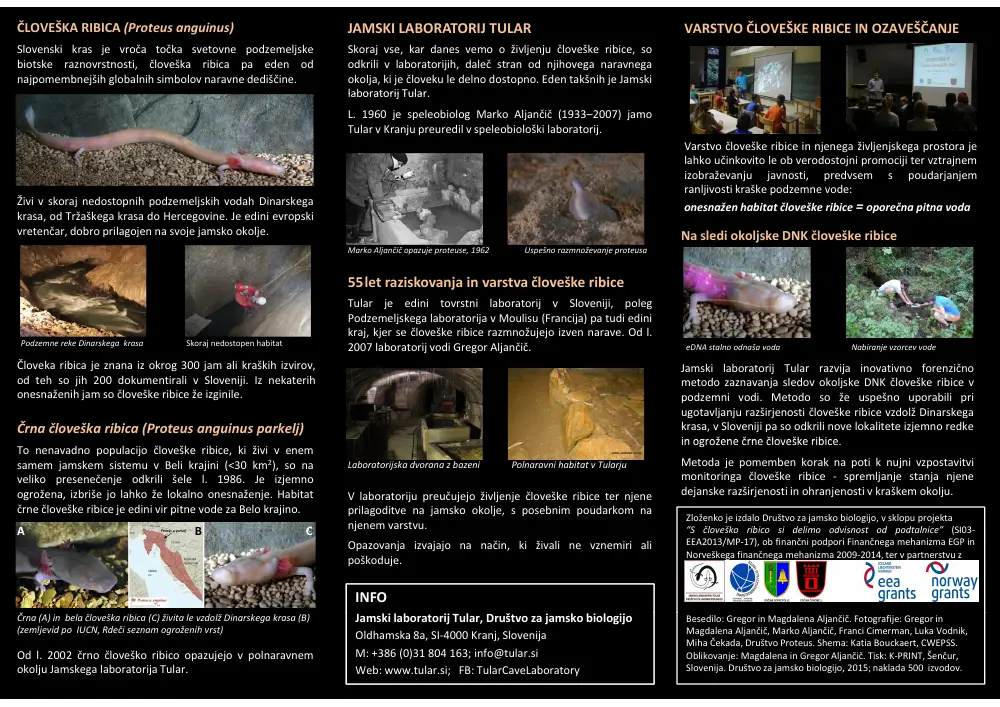

S človeško ribico si delimo odvisnost od podtalnice


Povzetek projekta Medijske objave
Prijavitelj / vodilni partner: Društvo za jamsko biologijo / Jamski laboratorij Tular
Partnerji: Biološki inštitut Jovana Hadžija ZRC SAZU, Občina Črnomelj in Občina Dobrepolje, v sodelovanju z Oddelkom za zootehniko Biotehniške fakultete, UL
Monitoring razširjenosti črne človeške ribice

Razvoj metode forenzične detekcije okoljskih sledov črne človeške ribice v Beli krajini.
S pomočjo nove metode smo podvojili število znanih lokalitet te izjemno ogrožene jamske dvoživke.
GIS analiza onesnaženosti podzemne vode v Beli krajini

Izdelana je bila GIS karta razširjenosti črne človeške ribice ter
GIS analiza ranljivosti jamskega habitata in kraške podzemne vode (glej zgoraj: nitrati).
Mednarodni posvet SOS Proteus

Mednarodni posvet o vzpostavitvi monitoringa in praktičnih ukrepih za varstvo človeške ribice v Sloveniji (Videm, Dobrepolje, 12. 12. 2015).
Program posveta (PDF 1,2 MB)Ogroženost človeške ribice in podzemne vode

Varstvo človeške ribice in drugih endemičnih jamskih živali ni le poskus zaustavitve izgube biotske raznovrstnosti, temveč tudi skrb, s katero se človeštvo mora soočiti: z jamskimi živalmi smo soodvisni od podzemne vode. Zloženka (PDF; 1,3 MB)Vzgoja in izobraževanje javnosti

Predavanja za mladino in lokalne skupnosti na področjih, kjer je razširjena človeška ribica.
Raziskovalna naloga učencev OŠ Dragatuš ter mentorstvo študentom biologije (RTŠB).
Ogroženost človeške ribice v Beli krajini
Močne padavine občasno naplavijo na površje tudi človeške ribice.
Nepoškodovane takoj vrnemo nazaj v matično populacijo, poškodovanim človeškim ribicam pa pomagamo z veterinarsko oskrbo. Zloženka (PDF; 1,6 MB)Film SOS Proteus
Kratki dokumentarni film je namenjen ozaveščanju javnosti, da bi s svojim vsakodnevnim ravnanjem zmanjšala pritisk na podzemno vodo, od države pa odločneje zahtevala izpolnjevanje zavez o varstvu jamske biotske raznovrstnosti in zaščiti virov pitne vode. Vljudno vabljeni k ogledu!
Film sestavljajo trije sklopi: 1. idilična podoba Krasa in mit o človeški ribici, 2.
realnost onesnaženosti kraškega podzemlja, ter 3. ogroženost črne človeške ribice in
pitne vode v Beli krajini.
Izvirni zapisi o projektih in laboratoriju. Datumi in zgodovinsko izrazje so ohranjeni.